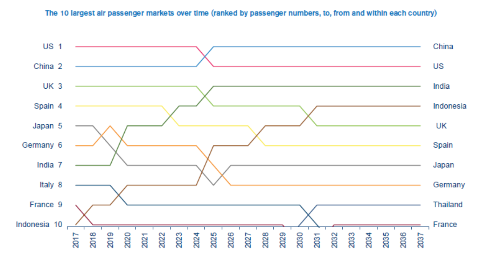

People's travelling pattern boosts aviation growth
Reporter: Jimmy Ding
Air travel will record its golden age in the future, with more and more passengers taking airplanes, many agencies forecast.
The World Tourism Organization (WTO) forecast international tourist arrivals worldwide are expected to climb by 3.3% a year between 2010 and 2030, reaching 1.8 billion by 2030.
While IATA projected the passenger numbers are expected to reach 7.3 billion by 2034, a 4.1% average annual growth in demand for air connectivity. Annual growth rate for China is higher than the average, around 5.5%. It estimated in 2034, flights
to, from and within China will account for some 1.3 billion passengers.
"The twilight draws on little by little while the sunshine fades out gradually, that is the best scenery for me when I am taking an airplane. It is also why I enjoy the journey starts from the moment the airplane takes off." Said Jeremy Lau, a university
student aged 22 in Hong Kong.

IATA forecast China will displace the United States as the world’s largest aviation market in the mid-2020s.
Jeremy said he loves travelling, he spent around HK$30,000 to HK$40,000 on travelling each year Jeremy said "Every year, I spent nearly a month for taking a vacation outside Hong Kong and the major part of transportation fees is on air ticket."
Research from Air Transport Action Group (ATAG) shows each day 120,00 flights will take off and over 10 million passengers will travel by airplane. However, not all travelers love taking airplanes.
Different from Jeremy, Ashley Han, a 48-year-old professor said she did not like to take airplane. "It is like you are put into jail and those flight attendants feeds you on a regular basis. The space is too limit and you can even not put down your
legs. I have to do some stretches after sitting for half an hour." Ashley said she prefer high-speed rail or trains to airplanes. "You can even lie down if you travel by train, however, sometimes you do not have a choice. If I am going really
far, railway transportation is much time consuming and should be ditched,"said Ashley
Ashley said many academic meetings were held in different locations, normally the school will buy air tickets for them instead of train tickets. "Maybe the school has some connections with airline companies or it does not want to waste our time. That
is why it always buy air tickets for us," said Ashley.
According to figures from ATAG, 57% of world tourists arrive by air, and from an economic perspective, aviation sector contributes to 3.6% of global GDP.
Tommy Chan, 56, a businessman in Hong Kong said the advancement of technology has improved the living standard of people. "Back to 1980s, few people take airplanes. I remember every time I took trains to go back to mainland China and the company will
reimburse the bus or trains fees. Nowadays, almost all business trips are by airplane."
With the technology developed, aviation sector mushroomed spectacularly. Figures from ATAG showed 65.5 million jobs are supported by aviation worldwide and the whole sector represents $2.7 trillion in global economic, a third of goods traded internationally
are brought to market through air transport.
Airbus and Boeing, the two aerospace giants delivered 1608 planes in 2018 in total, a sharp increase from 1000 deliveries in 2011, reflecting the surging demand for air travel, especially among rapidly growing carriers in Asia.
The Asia-Pacific region is expected to achieve unprecedented long-term growth in aviation. Over half of new passengers expected globally over the next 20 years will come from this region. Given that aviation is a catalyst for economic growth, this
spells good news for the continent. However, significant investment in infrastructure and technology, in tandem with implementation of smart regulations from state governments, will be required to fully reap the benefits of this aviation growth.